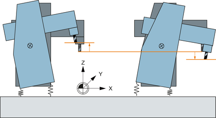

Nutzen
Die Nickkompensation erhöht die Präzision bei der Werkstückbearbeitung durch die Kompensation der Nachgiebigkeit innerhalb der Maschine und ist zum Beispiel bei Fahrständermaschinen hilfreich, um die Genauigkeit der Bearbeitung und die Oberflächenqualität zu verbessern.
Aufruf der Funktion an der Steuerung im Bedienbereich "Inbetriebnahme" → Softkey "NC" → Softkey "Nickkompensation". Der Softkey wird erst nach dem Setzen der Option angezeigt.
Beispiel
Nickbewegung in Z-Richtung bei Beschleunigung in X-Richtung:
Definition Nachgiebigkeit
Aus der Beschleunigung oder Verzögerung einer Achse als Ursache für das Nicken und dem Ausweichen einer Achse als Nachgeben in der Position kann ein Faktor bestimmt werden, der den Zusammenhang zwischen der beschleunigenden oder der verzögernden Achsbewegung und der Positionsabweichung in der kompensierten Achse beschreibt. Es geht keine Masse in die Berechnung ein. Der Nachgiebigkeitsfaktor ist der Kehrwert der Steifigkeit.
Messverfahren
Um die Nachgiebigkeit zu ermitteln, stehen zwei Verfahren zur Auswahl:
Standardisiertes Werkstück fräsen und beste Fräsbahn auswählen
Für ein standardisiertes Werkstück wird ein Zyklus angeboten, um mehrere Fräsbahnen mit unterschiedlichen Nachgiebigkeitsfaktoren zu fräsen. Anhand der Qualität der Werkstückoberfläche kann der Nachgiebigkeitsfaktor empirisch bestimmt werden.
Bei den Einstellungen für den Zyklus können Sie auch Planfräsen für das Werkstück auswählen, um mehrere Versuche mit unterschiedlichen Nachgiebigkeitsfaktoren an einem Werkstück durchzuführen.
Positionsabweichung mit einem Messtaster ermitteln
Die Positionsabweichung wird an unterschiedlichen Positionen exakt gemessen. Daraus kann der Nachgiebigkeitsfaktor mit Kenntnis der erreichten Beschleunigung oder Verzögerung berechnet werden.